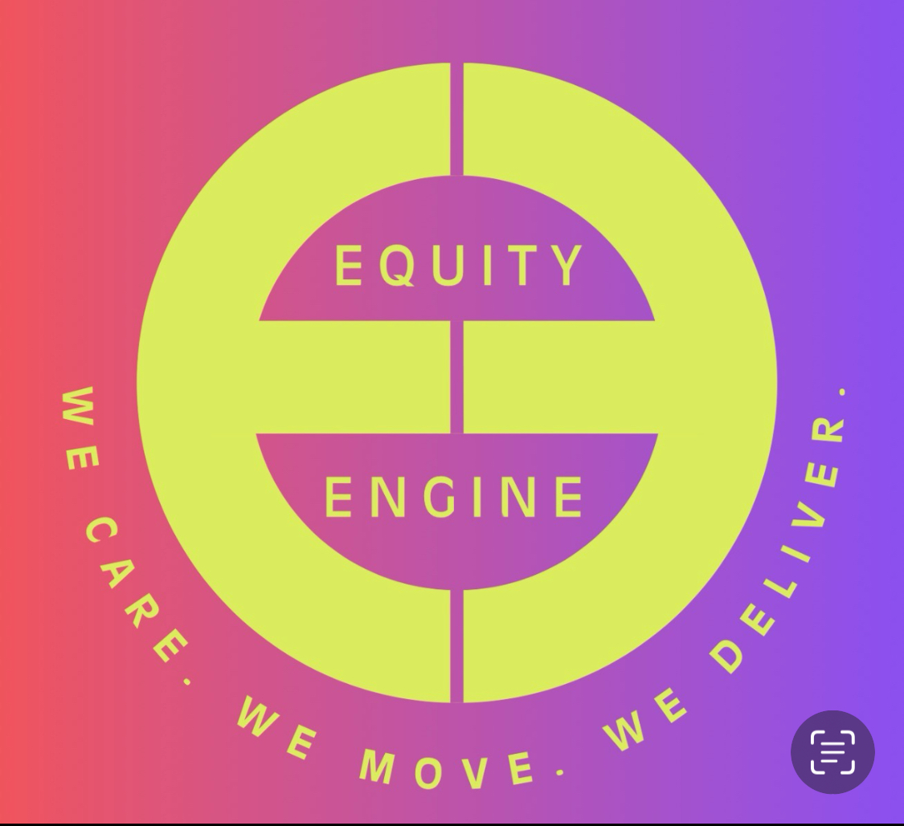

Ob Strategiechaos, Führungsbruch oder Change, der stecken bleibt – wir steigen ein, wenn andere rausgehen.
EquityEngine steht für Klarheit, Verantwortung und Wirkung.
Wir bringen Organisationen wieder ins Handeln – integer, professionell, nachhaltig. Gemeinsam.
We care. We move. We deliver.
Und ja: Wir meinen das ernst.
Wir bringen Veränderung in Bewegung – mit Haltung, Tiefgang und der Erfahrung aus Top-Level-Beratung und echter Führungsverantwortung.
Wir kennen die Realität großer Organisationen. Wir verstehen, wie strategische Entscheidungen, Teamdynamiken und individuelle Überforderung zusammenhängen – und wie man sie entwirrt.
Unser Background vereint analytische Schärfe und strategische Tiefe mit Leadership-Erfahrung und systemischer Beratung. Wir denken in Zusammenhängen, navigieren durch Komplexität – und bleiben, wenn andere gehen.
Wenn alles gleichzeitig kommt – und nichts mehr geht.
Wir steigen ein, wenn andere rausgehen.
Wenn Veränderung gut gemeint, aber schlecht gemacht ist.
Wir bringen Bewegung in Veränderung – mit Struktur, Haltung und Wirkung.
Wenn zwei Organisationen zusammenkommen – aber nicht zusammenfinden.
Wir verbinden Kulturen, entwirren Prozesse und schaffen gemeinsamen Flow.
Wenn alle rennen – aber keiner ankommt.
Wir schaffen Fokus und Wirkung – jenseits von Aktionismus.
Wenn es jemanden braucht – aber niemand da ist. Oder niemand alles kann.
Wir übernehmen Verantwortung, wenn es kritisch wird – auf Zeit oder im Tandem.
Vereinbare ein unverbindliches Erstgespräch – wir hören zu und schauen, was du brauchst.
Jetzt Kontakt aufnehmen